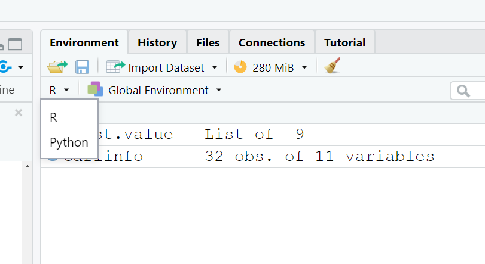

4[1] 4The Introduction gives an overview of what the book covers. Learning objectives:
We’ll need:
install.packages("tidyverse"))install.packages(c("nycflights13", "gapminder", "Lahman")))Code in the book has some slight differences from code on your console. Don’t freak out.
dput().Learning objectives:
## The Script Pane {.unlisted .unnumbered}
Conceptually, everything we do in R is a series of commands. The console is where we can enter these commands.
By default, entering <thing> means “print out <thing>.”
4[1] 4R has some pre-defined named objects:
pi[1] 3.141593This one is surprisingly useful:
letters [1] "a" "b" "c" "d" "e" "f" "g" "h" "i" "j" "k" "l" "m" "n" "o" "p" "q" "r" "s"
[20] "t" "u" "v" "w" "x" "y" "z"What it means to “print out” a thing depends on what kind of thing it is.
ggplot2::diamonds# A tibble: 53,940 x 10
carat cut color clarity depth table price x y z
<dbl> <ord> <ord> <ord> <dbl> <dbl> <int> <dbl> <dbl> <dbl>
1 0.23 Ideal E SI2 61.5 55 326 3.95 3.98 2.43
2 0.21 Premium E SI1 59.8 61 326 3.89 3.84 2.31
3 0.23 Good E VS1 56.9 65 327 4.05 4.07 2.31
4 0.29 Premium I VS2 62.4 58 334 4.2 4.23 2.63
5 0.31 Good J SI2 63.3 58 335 4.34 4.35 2.75
6 0.24 Very Good J VVS2 62.8 57 336 3.94 3.96 2.48
7 0.24 Very Good I VVS1 62.3 57 336 3.95 3.98 2.47
8 0.26 Very Good H SI1 61.9 55 337 4.07 4.11 2.53
9 0.22 Fair E VS2 65.1 61 337 3.87 3.78 2.49
10 0.23 Very Good H VS1 59.4 61 338 4 4.05 2.39
# ... with 53,930 more rowsmtcars mpg cyl disp hp drat wt qsec vs am gear carb
Mazda RX4 21.0 6 160.0 110 3.90 2.620 16.46 0 1 4 4
Mazda RX4 Wag 21.0 6 160.0 110 3.90 2.875 17.02 0 1 4 4
Datsun 710 22.8 4 108.0 93 3.85 2.320 18.61 1 1 4 1
Hornet 4 Drive 21.4 6 258.0 110 3.08 3.215 19.44 1 0 3 1
Hornet Sportabout 18.7 8 360.0 175 3.15 3.440 17.02 0 0 3 2
Valiant 18.1 6 225.0 105 2.76 3.460 20.22 1 0 3 1
Duster 360 14.3 8 360.0 245 3.21 3.570 15.84 0 0 3 4
Merc 240D 24.4 4 146.7 62 3.69 3.190 20.00 1 0 4 2
Merc 230 22.8 4 140.8 95 3.92 3.150 22.90 1 0 4 2
Merc 280 19.2 6 167.6 123 3.92 3.440 18.30 1 0 4 4
Merc 280C 17.8 6 167.6 123 3.92 3.440 18.90 1 0 4 4
Merc 450SE 16.4 8 275.8 180 3.07 4.070 17.40 0 0 3 3
Merc 450SL 17.3 8 275.8 180 3.07 3.730 17.60 0 0 3 3
Merc 450SLC 15.2 8 275.8 180 3.07 3.780 18.00 0 0 3 3
Cadillac Fleetwood 10.4 8 472.0 205 2.93 5.250 17.98 0 0 3 4
Lincoln Continental 10.4 8 460.0 215 3.00 5.424 17.82 0 0 3 4
Chrysler Imperial 14.7 8 440.0 230 3.23 5.345 17.42 0 0 3 4
Fiat 128 32.4 4 78.7 66 4.08 2.200 19.47 1 1 4 1
Honda Civic 30.4 4 75.7 52 4.93 1.615 18.52 1 1 4 2
Toyota Corolla 33.9 4 71.1 65 4.22 1.835 19.90 1 1 4 1
Toyota Corona 21.5 4 120.1 97 3.70 2.465 20.01 1 0 3 1
Dodge Challenger 15.5 8 318.0 150 2.76 3.520 16.87 0 0 3 2
AMC Javelin 15.2 8 304.0 150 3.15 3.435 17.30 0 0 3 2
Camaro Z28 13.3 8 350.0 245 3.73 3.840 15.41 0 0 3 4
Pontiac Firebird 19.2 8 400.0 175 3.08 3.845 17.05 0 0 3 2
Fiat X1-9 27.3 4 79.0 66 4.08 1.935 18.90 1 1 4 1
Porsche 914-2 26.0 4 120.3 91 4.43 2.140 16.70 0 1 5 2
Lotus Europa 30.4 4 95.1 113 3.77 1.513 16.90 1 1 5 2
Ford Pantera L 15.8 8 351.0 264 4.22 3.170 14.50 0 1 5 4
Ferrari Dino 19.7 6 145.0 175 3.62 2.770 15.50 0 1 5 6
Maserati Bora 15.0 8 301.0 335 3.54 3.570 14.60 0 1 5 8
Volvo 142E 21.4 4 121.0 109 4.11 2.780 18.60 1 1 4 2carlinfo <- datasets::mtcars
# Printing the first 6 ROWS using head() or last by tail()
head(carlinfo) mpg cyl disp hp drat wt qsec vs am gear carb
Mazda RX4 21.0 6 160 110 3.90 2.620 16.46 0 1 4 4
Mazda RX4 Wag 21.0 6 160 110 3.90 2.875 17.02 0 1 4 4
Datsun 710 22.8 4 108 93 3.85 2.320 18.61 1 1 4 1
Hornet 4 Drive 21.4 6 258 110 3.08 3.215 19.44 1 0 3 1
Hornet Sportabout 18.7 8 360 175 3.15 3.440 17.02 0 0 3 2
Valiant 18.1 6 225 105 2.76 3.460 20.22 1 0 3 1tail(carlinfo) mpg cyl disp hp drat wt qsec vs am gear carb
Porsche 914-2 26.0 4 120.3 91 4.43 2.140 16.7 0 1 5 2
Lotus Europa 30.4 4 95.1 113 3.77 1.513 16.9 1 1 5 2
Ford Pantera L 15.8 8 351.0 264 4.22 3.170 14.5 0 1 5 4
Ferrari Dino 19.7 6 145.0 175 3.62 2.770 15.5 0 1 5 6
Maserati Bora 15.0 8 301.0 335 3.54 3.570 14.6 0 1 5 8
Volvo 142E 21.4 4 121.0 109 4.11 2.780 18.6 1 1 4 2Actually, entering <thing> really means “evaluate and print <thing>.”
cos(pi)[1] -1I use R as a desktop calculator a lot.
60*60*24[1] 86400Sometimes you don’t just want to print out a thing, especially if it’s a complex evaluation. You want to save it to a named object so that you can do more stuff with it. Use the assignment arrow (<-) for this.
tau <- 2*piMost programming languages use the equals sign (=) for assignment, and this also works in R. But assignment is really a conceptually distinct thing from mathematical equality, so it makes sense to use a different symbol. It’s a bit more annoying to type, though, so get used to the keyboard shortcut Alt+minus.
Objects that you have named will show up in the “Environment” panel.

By default, when you make an assignment, the result of the evaluation is not printed in the console. To assign and print in one command, surround the assignment with parentheses:
(tau <- 2*pi)[1] 6.283185There are only two hard things in computer science: cache invalidation and naming things. And off-by-one errors.
_, and ..Some suggestions:
_ as a separator.
student_item_datanum_studentsfall2020_math_courses_with_multiple_sectionsA function in R is like a function in math: it’s a box that takes in input and returns output.1
Functions can take zero, one, or more than one object as input. When you call a function, you specify values (arguments) for the inputs. Evaluating the function call gives the output of the function.
length(letters)[1] 26Or:
nrow(ggplot2::diamonds) [1] 53940The inputs (the function parameters) have names. When you pass in the function arguments, you can do so by name:
seq(from = 1, to = 10) [1] 1 2 3 4 5 6 7 8 9 10Specifying names is (usually) optional, but it can make your code more readable, so it’s a good habit to get into. If you name the arguments, it doesn’t matter what order you put them in:
seq(to = 10, from = 1) [1] 1 2 3 4 5 6 7 8 9 10If you don’t specify names, the function matches the arguments to the parameters in the order they appear in the function definition.
seq(10, 1) [1] 10 9 8 7 6 5 4 3 2 1Explore on your own:
Functions may also have side effects, which is something we can talk about later.↩︎